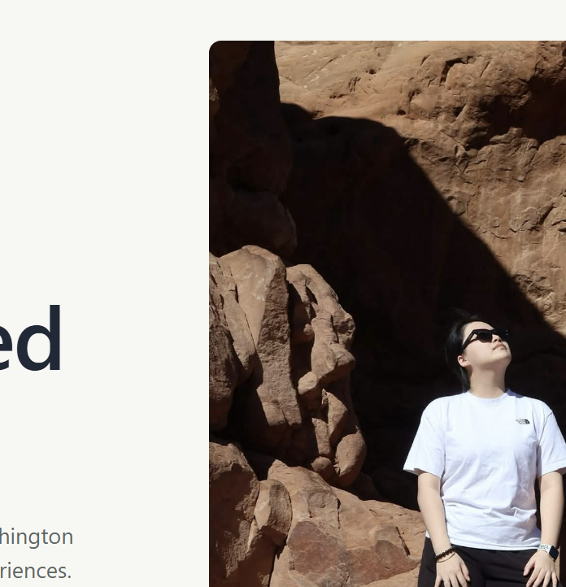

SafeMIC
A healthcare simulation concept focused on helping teams practice safer, clearer incident response under pressure.
Explore projectDesigner & Engineer
I’m Grace, an HCDE student at the University of Washington building accessible, meaningful digital experiences with a gentle eye for systems and people.

About
I like work that combines research, interaction design, and engineering. My favorite projects make complex things feel calmer, clearer, and more possible.
Selected work
A healthcare simulation concept focused on helping teams practice safer, clearer incident response under pressure.
Explore projectLightweight planning flows for students who need practical support without another overwhelming dashboard.
Explore projectA living web portfolio designed to feel minimal, personal, and easy to keep updated as the work grows.
Explore projectContact
I’m always happy to talk about UX, accessibility, design systems, and thoughtful frontend work.
Email Grace